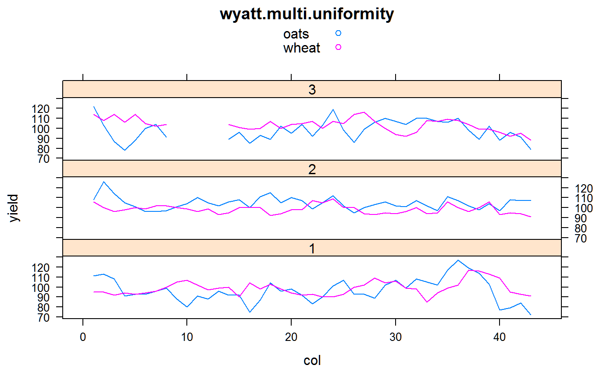
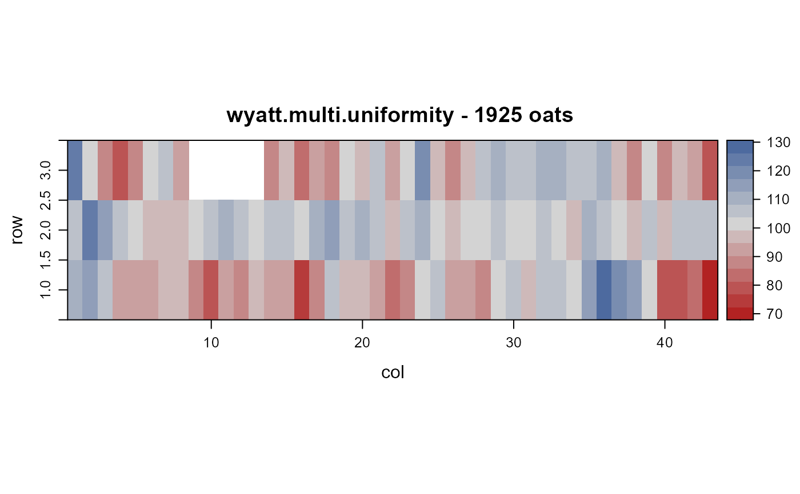
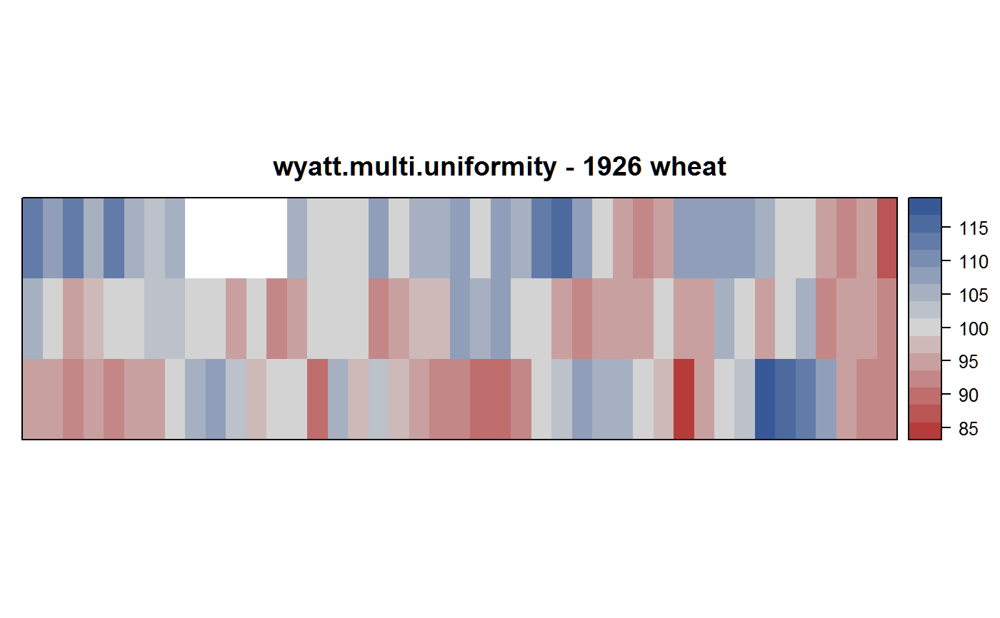

wyatt.multi.uniformity.RdUniformity trial of oats and wheat on the same ground.
data("wyatt.multi.uniformity")
A data frame with 258 observations on the following 5 variables.
colcolumn
rowrow
yieldyield, bu/ac
yearyear
cropcrop
Experiments conducted at the Soils Experimental field at the University of Alberta, Canada. Oats were grown in 1925, The average yield was 88 bushels. Wheat was grown in 1926, with an average yield of 32.2 bu/acre. The data reported are relative yields within each year.
The plot size in rows 1 and 2 (Series A and B in the original paper) is 1/10th acre. The plot size in row 3 is 1/11 acre.
Field length: 3 plots (140 ft, 140 ft, 128 ft) + 2 roads * 16 feet = 440 feet.
Field width: 43 plots * 37 ft = 1591 feet.
F. A. Wyatt (1927). Variation in plot yields due to soil heterogeneity. Scientific Agriculture, 7, 248-256. Table 1. https://doi.org/10.4141/sa-1927-0020
None
library(agridat) data(wyatt.multi.uniformity) dat <- wyatt.multi.uniformity # range of yields. Wyatt has 48.6 bu/ac for oats, 10.4 for wheat # diff(range(na.omit(subset(dat, crop=="oats")$yield)/100*88)) # 48.4 # diff(range(na.omit(subset(dat, crop=="wheat")$yield)/100*32.8)) # 10.5 # std dev. Wyatt has 9.18 bu/ac for oats, 2.06 for wheat, 2.06 for wheat # sd(na.omit(subset(dat, crop=="oats")$yield)/100*88) # 9.11 # sd(na.omit(subset(dat, crop=="wheat")$yield)/100*32.8) # 2.14 # correlation across years. Wyatt has .08 # cor(reshape2::acast(dat, row+col ~ crop, value.var="yield"), use="pair") # Fig 3 libs(lattice) xyplot(yield ~ col|factor(row), dat, group=crop, main="wyatt.multi.uniformity", type='l', layout=c(1,3), auto.key=TRUE )# \dontrun{ libs(desplot) desplot(dat, yield ~ col*row, subset=crop=="oats", tick=TRUE, aspect=(440)/(1591), # true aspect main="wyatt.multi.uniformity - 1925 oats")desplot(dat, yield ~ col*row, subset=crop=="wheat", aspect=(440)/(1591), # true aspect main="wyatt.multi.uniformity - 1926 wheat")# }